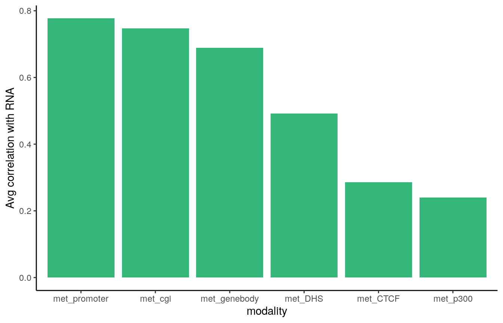

scNMTseq challenge analysis using a PLS-based approach
Al JalalAbadi1
22 Jul 2020
Source:vignettes/index.Rmd
index.RmdTo Do
- Add kNN
Note: These analyses are (slightly) different from the ones presented in the hackathon in the sense that:
- The cells used are different (only embryonic cells used)
- To enhance reproducibility on different machines,
uwot::umapwas used instead ofumap::umapfor dimensionality reduction of RNA data so that python dependencies are reduced
Load the required packages:
library(BIRSBIO2020.scNMTseq.PLS) library(MultiAssayExperiment) library(mixOmics) library(ggplot2) library(knitr) library(uwot) library(nipals) library(biomaRt) library(magrittr) library(reshape2) library(data.table) library(MOFA2)
Data
Details of the hackathon data and preprocessing steps: https://github.com/BIRSBiointegration/Hackathon/tree/master/scNMT-seq
Load the MultiAssayExperiment object:
cat(sprintf('loading data from %s ...\n', params$data_path)) #> loading data from https://cloudstor.aarnet.edu.au/plus/s/Xzf5vCgAEUVgbfQ/download?path=%2Foutput&files=scnmtseq_gastrulation_mae_826-cells_orderedFeatures.rds ... gastru.mae <- readRDS(url(params$data_path))
An overview of the data object:
gastru.mae #> A MultiAssayExperiment object of 13 listed #> experiments with user-defined names and respective classes. #> Containing an ExperimentList class object of length 13: #> [1] rna: matrix with 18345 rows and 826 columns #> [2] met_genebody: matrix with 15837 rows and 826 columns #> [3] met_promoter: matrix with 12092 rows and 826 columns #> [4] met_cgi: matrix with 5536 rows and 826 columns #> [5] met_p300: matrix with 101 rows and 826 columns #> [6] met_CTCF: matrix with 175 rows and 826 columns #> [7] met_DHS: matrix with 66 rows and 826 columns #> [8] acc_genebody: matrix with 17139 rows and 826 columns #> [9] acc_promoter: matrix with 16518 rows and 826 columns #> [10] acc_cgi: matrix with 4459 rows and 826 columns #> [11] acc_p300: matrix with 138 rows and 826 columns #> [12] acc_CTCF: matrix with 898 rows and 826 columns #> [13] acc_DHS: matrix with 290 rows and 826 columns #> Functionality: #> experiments() - obtain the ExperimentList instance #> colData() - the primary/phenotype DataFrame #> sampleMap() - the sample coordination DataFrame #> `$`, `[`, `[[` - extract colData columns, subset, or experiment #> *Format() - convert into a long or wide DataFrame #> assays() - convert ExperimentList to a SimpleList of matrices #> exportClass() - save all data to files
filter extra-embryonic cells
cat(sprintf('Dropping cells from lineage(s) %s:\n', paste(sQuote(params$drop_lineages), collapse = ', '))) #> Dropping cells from lineage(s) 'Visceral_endoderm', 'ExE_ectoderm': cat(sprintf('Retaining assays: %s: \n', paste(sQuote(params$keep_assays), collapse = ', '))) #> Retaining assays: 'rna', 'met_genebody', 'met_promoter', 'met_cgi', 'met_p300', 'met_CTCF', 'met_DHS': gastru.mae <- gastru.mae[, !(gastru.mae$lineage10x_2 %in% params$drop_lineages), params$keep_assays] #> harmonizing input: #> removing 4494 sampleMap rows not in names(experiments)
gastru.mae #> A MultiAssayExperiment object of 7 listed #> experiments with user-defined names and respective classes. #> Containing an ExperimentList class object of length 7: #> [1] rna: matrix with 18345 rows and 749 columns #> [2] met_genebody: matrix with 15837 rows and 749 columns #> [3] met_promoter: matrix with 12092 rows and 749 columns #> [4] met_cgi: matrix with 5536 rows and 749 columns #> [5] met_p300: matrix with 101 rows and 749 columns #> [6] met_CTCF: matrix with 175 rows and 749 columns #> [7] met_DHS: matrix with 66 rows and 749 columns #> Functionality: #> experiments() - obtain the ExperimentList instance #> colData() - the primary/phenotype DataFrame #> sampleMap() - the sample coordination DataFrame #> `$`, `[`, `[[` - extract colData columns, subset, or experiment #> *Format() - convert into a long or wide DataFrame #> assays() - convert ExperimentList to a SimpleList of matrices #> exportClass() - save all data to files
Breakdown of the cells in each stage:
table(gastru.mae$stage) %>% as.data.frame() %>% set_colnames(c('stage', '# of cells')) %>% kable()
| stage | # of cells |
|---|---|
| E4.5 | 104 |
| E5.5 | 84 |
| E6.5 | 218 |
| E7.5 | 343 |
## create a data.frame from cell metadata coldata <- data.frame(colData(gastru.mae))
Feature detection
Create density plots of the feature detection rate across all cells for all modalities:
# get the methylation assays met_assays <- grep(names(gastru.mae), pattern = '^met', value = TRUE) # add dimensions to labels for ggplot dims <- lapply(experiments(gastru.mae[,,met_assays]), dim) #> harmonizing input: #> removing 749 sampleMap rows not in names(experiments) dims <- sapply(dims, function(x) sprintf(' (%s, %s)', x[2], x[1])) names(met_assays) <- paste0(met_assays, dims) %>% as.list() met_assays #> met_genebody (749, 15837) met_promoter (749, 12092) met_cgi (749, 5536) #> "met_genebody" "met_promoter" "met_cgi" #> met_p300 (749, 101) met_CTCF (749, 175) met_DHS (749, 66) #> "met_p300" "met_CTCF" "met_DHS" # calculate the feature detection in a data.frame for methylation assays coverages <- lapply(met_assays, function(assay_name) { mat <- assay(gastru.mae, assay_name) NAs <- rowSums(!is.na(mat))/dim(mat)[2]*100 data.frame(pct_NAs=NAs) }) # create a long data.frame containing the assay name for plot coverages <- rbindListWithNames(coverages) coverages$dataset <- factor(coverages$dataset, levels = unique(coverages$dataset), ordered = TRUE)
Genomic contexts vary in level of feature detection rates:
cov_plot <- ggplot(coverages, aes(x = pct_NAs)) + geom_density(fill = 'lightblue', show.legend = FALSE) + geom_vline(aes(xintercept=mean(pct_NAs)), color="blue", linetype="dashed", size=0.5) + labs(x = '% of cells detecting the feature') + facet_wrap(.~dataset, nrow = 2) + theme_bw() + theme(strip.text.x = element_text(size = 10, face = 'bold', color = 'purple')) cov_plot

density plots for methylation data show that shorter genomic regions tend to have less feture coverage. Dashed blue line indicates the average across all modalities.
RNA
UMAP
Here we use uwot package for Uniform Manifold Approximation Projection. The original study used the umap package with method = 'umap-learn' parameter which requires the ‘umap-learn’ python library and can add complexity to set up on a VM.
set.seed(params$umap_params['run.seed']) ## all params use defaults except for 'n_components' and 'min_dist' cat(sprintf('running umap on RNA data with parameters: %s ...\n ', paste(names(params$umap_params[-1]), ':', params$umap_params[-1], collapse = ', '))) #> running umap on RNA data with parameters: n_neighbors : 15, n_components : 4 ... #> umap_rna_unsup <- uwot::umap( t(assay(gastru.mae, 'rna')), n_neighbors = params$umap_params['n_neighbors'], n_components = params$umap_params['n_components'], metric = "euclidean", n_epochs = NULL, learning_rate = 1, scale = FALSE, init = "spectral", init_sdev = NULL, spread = 1, set_op_mix_ratio = 1, local_connectivity = 1)
Create a data.frame of embeddings:
df <- data.frame(umap_rna_unsup) colnames(df) <- paste0('UMAP_', seq_along(df)) df <- cbind(df, coldata)
Create colour palettes for stages and lineages:
# col_pallete <- viridisLite::viridis(n = 4) col_pallete <- c("#440154FF", "#31688EFF", "#35B779FF", "#FDE725FF") names(col_pallete) <- c("E4.5", "E5.5", "E6.5", "E7.5")
## helper function to create both plots coloured by stage plot_umap_by_stage <- function(df, dims = c(1,2)) { axes <- paste0('UMAP_', dims) ggplot(df, aes_string(axes[1], axes[2])) + geom_point(aes(col=stage)) + theme_classic()+ scale_color_manual(values = col_pallete) }
First two components:
plot_umap_by_stage(df = df, dims = c(1,2))
UMAP plot shows distinct cell populations corresponding to early-stage, mid-stage, and late-stage cells as well as the within-stage variation for mainly E4.5 and E6.5 which could correspond to different lineages.
Integration
gene id to gene symbol conversion data.frame
Get all the gene names from all modalities:
all_features <- sapply(experiments(gastru.mae), rownames) %>% unlist() all_genes <- grep(pattern = '^ENSMUSG', x = all_features, value = TRUE) all_genes <- unique(all_genes) length(all_genes) #> [1] 18359
Get the Ensembl gene name for these gene ids:
ensembl <- useMart("ensembl", dataset="mmusculus_gene_ensembl") mouse_gene_ids <- all_genes symbols <- getBM(attributes=c('ensembl_gene_id', 'external_gene_name'), filters = "ensembl_gene_id", values = all_genes, mart = ensembl) symbols <- data.frame(symbols, row.names = 1)
PLS integartion of all modalities with feature selection
# data dimensions lapply(experiments(gastru.mae), dim) #> $rna #> [1] 18345 749 #> #> $met_genebody #> [1] 15837 749 #> #> $met_promoter #> [1] 12092 749 #> #> $met_cgi #> [1] 5536 749 #> #> $met_p300 #> [1] 101 749 #> #> $met_CTCF #> [1] 175 749 #> #> $met_DHS #> [1] 66 749
mmspls <- multimodal_analysis_wrapper(mae = gastru.mae, study_assays = NULL, ncomp = 2, scale = FALSE, design = 'null', lineages = NULL, stages = NULL, DA = NULL, keepX = NULL, save = FALSE) #> Making unique feature names by adding assay name to feature name for: met_genebody #> Making unique feature names by adding assay name to feature name for: met_promoter #> Warning in cor(A[[k]], variates.A[[k]]): the standard deviation is zero
plotIndiv_wrapper <- function(pls_obj, coldata, col_cell = 'stage', legend.title = 'Stage', comp = c(1,2), ...) { ## order coldata cells based on matching cells in pls modalities coldata <- coldata[rownames(pls_obj$X[[1]]),] cell_class <- coldata[,col_cell] ## col factor for cells cell_class <- factor(cell_class) suppressWarnings({ plotIndiv(pls_obj, pch = 16, comp = comp,group = cell_class, legend = TRUE, legend.title = legend.title, size.subtitle = 10, cex=0.8, ...) }) }
Concordancy with RNA
Average correlation of the components of rna and different modalities:
cor_with_rna <- sapply(mmspls$variates[-1], function(x) { mean(diag(cor(mmspls$variates$rna, x))) }) cor_with_rna <- cor_with_rna %>% sort(decreasing = TRUE) cor_with_rna <- cor_with_rna %>% as.data.frame() %>% set_colnames(c('cor')) cor_with_rna$modality <- factor(rownames(cor_with_rna), levels = rownames(cor_with_rna), ordered = TRUE) ggplot(cor_with_rna, aes(x = modality, y = cor)) + geom_col(fill = "#35B779FF") + theme_classic() + labs(y = 'Avg correlation with RNA', y = 'Modality')

Melbourne Integrative Genomics, The University of Melbourne (al.jal.abadi@gmail.com)↩︎